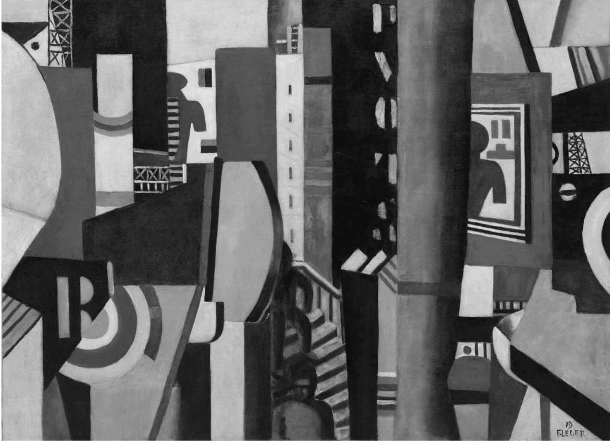
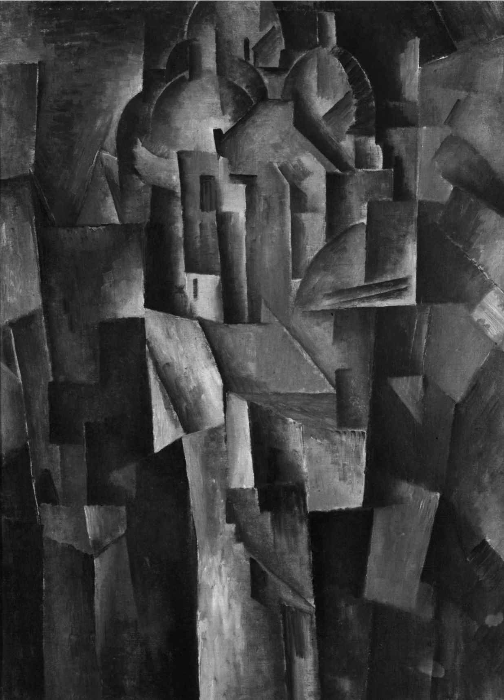

T. S. 艾略特，《玄学派诗人》（1921年）
J. C. 斯夸尔 [2] 戏仿T. S.艾略特的一首四行诗
本书探讨的是1909-1939年期间，创新艺术作品中所融入的理念和技巧。从根本上说，这里讨论的不是“现代性”，也就是说，不是这一时期由于丧失了宗教信仰、对科学技术日益依赖、资本主义带来的市场扩张和全面商品化、大众文化的发展及其影响、官僚作风侵入私人生活，以及两性关系的观念彻底改变等诸多现象而带来的压力和紧张。我们会看到，所有这些发展都对艺术产生了巨大影响，但这本书的主旨是挑战我们对单个艺术作品的理解。
艾略特思索的一些难题，或可帮助我们对艺术作品的现代主义性质管中窥豹；因此我准备选取一部小说、一幅绘画和一个音乐作品，探讨它们所揭示的、那个时期的艺术的本质是什么。（这三部作品全都围绕着现代性的一个重要方面：城市生活。）我将试图以它们为例，阐述创新的技巧与现代主义理念如何相互联系和影响。在此过程中，我们必须容忍一些棘手的诠释问题，因为这些作品全都以各具异趣的方式偏离了19世纪现实主义规范的常轨，而总的来说，我们至今仍然是依赖后者来理解这个世界的。但像《米德尔马契》和《安娜·卡列尼娜》这样的小说（即便它们关注的是有关妇女地位的新主张所引发的不安），如今看来也出自相对稳定的知识框架，由一位多少还算友善的、表达清晰易懂的、拥有道德权威的叙述者呈现给我们，他所创造的是一个我们能够认知的、属于过去的世界。现代主义艺术则远为迂回——它会用艺术的规则重新编排世界，由此展现在我们眼前的，似乎已不再为我们所熟知。
《尤利西斯》
詹姆斯·乔伊斯的《尤利西斯》一书，开篇乍看之下来自现实主义世界；但表象会有欺骗性，小说越到后面，这一点就越突出，文风的偏离也越发明显，虽然从根本上说，它们都取自相当精确的史实。
这里最主要的现代主义技巧就是乔伊斯使用的典故，这些典故让我们感受到了文本内在的概念化或形式化结构。因此，正如休·肯纳 [4] 在其精彩导读中所提到的，在这本叙事堪与荷马的《奥德赛》相媲美的书中，头九个词戏仿了荷马式的六步格韵律；而在典故的平行世界里，穆利根手托的钵也是献祭的圣餐杯，上面“交叉”放置着他的剃须工具。他的淡黄色浴衣摹仿的是牧师金白色相间的法衣——那个时代，还没有关于其他颜色的法衣的规定。此外，“没系腰带”（为确保正派，牧师须在仪式上系好腰带，这里却没有）让他正面赤裸，私处显露在外，任柔风爱抚；他也对此心知肚明。而“吟诵”是故意为之；准备剃须时，他也在戏仿裸体牧师主持“黑弥撒”的情景。他说的那句话属于“天主教弥撒”中的“常规弥撒”，据称原句出自一位被流放的《诗篇》作者，这里引用的是圣哲罗姆根据希伯来语原文翻译的拉丁文版本：“我要走向上主的祭台。”因此，这是对引用的引用的引用，原句是受到迫害时喊出的希伯来求助语。
当然，初次阅读此书的读者并不会注意到这一切——或许也不必如此——但整本书处处设置着这样的摹仿，让我们意识到明显的结构平行。所以，肯纳还指出：
《尤利西斯》之所以是典型的现代主义作品，最起码是因为，它像《荒原》和《诗章》一样，是一部充满典故和百科全书式相通性的作品，对城市生活内部的文化变革极为关注。就这部小说而言，乔伊斯使用这一技巧的收获之一，便是用神话和历史方式来组织叙事，也借此使用多样化的讽刺方式来比较不同的文化：爱尔兰人怎么就成了受迫害的“选民”？
很多这类技巧对我们理解一大批现代主义艺术都非常关键，我建议从以下两个维度来分析“现代主义客体”（无论是绘画、文本，还是音乐作品）：一个咄咄逼人的新理念和一种独创的技巧。对乔伊斯（以及艾略特和庞德，甚至还包括他们之前的弥尔顿和蒲柏）而言，因为在文本中使用了典故技巧，才使得文化比较和文化同步性的理念得以实现。
《城市》
在费尔南·莱热 [5] 的巨幅画作《城市》（La Ville ，图1）中，我们不得不面对巴勃罗·毕加索和乔治·布拉克（后者的范例见图2）的立体派绘画的影响。1908年11月，艺术评论家路易·沃克塞尔将布拉克描述为“一个胆大包天的年轻人……［他］……轻视形式，简化一切，把地点、人物和房屋都简化成几何图案（des schémas géometriques ），进而又简化成立方体”。这种“简化”是现代主义绘画日渐抽象的大趋势的一部分，在亨利·马蒂斯 [6] 、胡安·格里斯 [7] 、瓦西里·康定斯基 [8] 、皮特·蒙德里安 [9] 、胡安·米罗 [10] 和其他很多人的作品中均可看到这一点。这种趋势对于莱热等画家的部分影响在于，它使得几何图形或设计成为他们绘画的一个主要特征，因为从1906到1912年，立体派画家摧毁了三维透视的现实主义传统，这种传统自文艺复兴时期以来便一直是艺术界的主流。在立体主义绘画中，画家在同一个画面里通过一个以上的视角，将物体以截然对立的方式呈现出来，这就使得：

图1 费尔南·莱热，《城市》（1919）。立体主义将我们对城市的各种认知拼贴在一起
在很多人看来，这是现代主义时代的重大艺术创新，自那以后的大多数绘画都受其影响，或以其为参照来定义自身。这极大地偏离了现实主义幻觉，在莱热的画作中，我们就可以看到这5种影响。柯克·瓦恩多 [11] 称之为“机器时代城市生活的乌托邦式布告牌”。我们可以看到，这幅画上有体现景深的透视元素，比如中间的楼梯，而它又与其左右的重叠平面相互抵触，或与它们互不协调。画面中有大梁、一根柱子、看上去像是海报的东西、可能是船上的烟囱，但它们无法组成一幅和谐的画面。它们以看似具象的形状构成了一幅彼此重叠的拼贴画。“本应”被看作近景或远景因而相对比例应全然不同的事物，并未按比例呈现出来（例如桶形的人物）。这幅画中的物体不是根据传统的具象方法来安排的，但都被艺术家同时并置在画作的一个平面中。莱热排列了多个有城市特征但在几何形状上迥异的元素，来进行抽象的设计。（在同一时代的纪尧姆·阿波利奈尔 [12] 和T. S. 艾略特的诗歌中可以看到非常相似的艺术手法，即对比并置而非逻辑关联。）很多立体派画家使用常见的道具（酒杯、活页乐谱、报纸等）作为其绘画的基础，因此，人们很容易认为《城市》也在戏仿城市大型广告海报的效果（所以，詹姆斯·罗森奎斯特 [13] 的波普艺术表现方式就是对莱热这一方面的继承）。

图2 乔治·布拉克，《圣心堂》（Le Sacre Coeur ，1910）。此画与该建筑有着彼此抗衡的几何结构
文化的两个方面，即“高雅”的形式主义和“低俗”的大众内容再一次狭路相逢，这种互动对现代主义而言至关重要。莱热的作品之所以属于现代派，是因为它以全新的组织原则，为绘画开拓出一种全新的语言或语法。画中元素的组合方式与现实主义传统截然不同。画中各个部分的相似性留待我们去探索，但这同样有赖于我们学会欣赏现代主义的抽象模式，也取决于它们以何种方式圆满地组合成一幅图案。
《三便士歌剧》
并非所有的现代主义作品都带有如此显著的实验色彩。我在音乐领域所举的示例表面看来要浅白易懂得多——的确，其形式基本上是通俗的，处处是当代舞蹈旋律，偶尔夹杂些现代主义的“错误音符”。《三便士歌剧》（The Threepenny Opera ）是库尔特·魏尔 [14] 为贝托尔特·布莱希特 [15] 的文本创作的，通过使用通俗（但在这里是原创）的乐调，继承了约翰·盖伊 [16] 的风格，使得这部歌剧更接近于歌舞表演，而不是威尔第或瓦格纳。布莱希特笔下那些维多利亚时代后期伦敦苏豪区的骗子、乞丐和银行家们与盖伊独创的《叫花子歌剧》中的恶棍们齐头并进，并形成了持久的鲜明对照。在盖伊的原剧中，皮丘姆是个收受赃物之人；布莱希特则在戏中安排了一个职业乞丐团伙。音乐程式往往是对早期风格的戏仿，因而典故再度成为主角，例如在序曲中就不乏亨德尔 [17] 式的时刻，并一度尝试模仿赋格曲。这种风格上的不稳定有一个重要的功能：应当是让我们更难以像在早期的歌剧中那样，始终充满同情地沉浸在角色中不能自拔，因此：
戏中还有一个舞台旁白，以超脱的“史诗”语调来叙述事件。（在1928年的剧本中——布莱希特认为那是新式“史诗剧场”的一次成功实验——他鼓励制作人把串场旁白文本投射到屏幕上。）如我们所见，这是对那些疏离或“间离”技巧的早期使用，那些技巧对布莱希特政治戏剧的后来发展至关重要。这里明显属于现代主义的特征是对感同身受和沉浸其中的“中产阶级”观念的敌视，那些观念与传统的现实主义相伴相随［例如普契尼的“写实主义”（verisma ），或是歌剧《玫瑰骑士》（Der Rosenkavlier ）的情节，尽管后者与维也纳华尔兹也有着近乎戏仿的关系］。因此，布莱希特发明的各式解放、批评和疏离效果的用意并不在于帮助观众去“消费”作品，而是退后一步，反思故事中人物的政治意义，不是要去认同他们作为个人的情感，并从中获取力量。在最后一场现场执法的最初版本中，小刀麦基（即“麦基斯”）走出自己的角色，与后台的“作者”的声音争论，辩称这出戏不需要以他被绞死作为结局。
和很多现代派艺术一样，这部戏也通过戏仿过去而与过去拉开了距离。与小刀麦基相关的“谋杀”主题是对瓦格纳赋予剧中人物以主题旋律的粗糙模仿。皮条客的感伤民谣以及麦基与波莉滑稽的爱情二重奏都风格怪异。《三便士歌剧》与表现派的个人主义相左，同时还是反浪漫主义的。正如魏尔在1929年接受采访时，带着左翼人士典型的“曾经沧海难为水”的腔调所说的那样：“这种音乐是对瓦格纳最彻底的反动。它象征着音乐剧概念的彻底毁灭。”而费利克斯·扎尔滕 [18] （在回顾1929年的维也纳演出时）说，剧中的音乐“像它的诗句一样充满震撼的旋律，像那些流行歌谣一样刻意而扬扬自得地琐碎和频用典故，像它用爵士乐手法耍弄乐器一样诙谐，又像它的剧本一样紧跟时代，意气风发，充满情绪和攻击性”。
风格变化
这些作品直指各个不同的方向，用它们来为“现代主义”设置严格的边界或为之确立“定义”，难免会引发误解。现代主义包罗万象，这种多元和混乱在当时便显而易见，从当时加诸艺术新作上的那些前后矛盾的定义和阐释策略上就可见一斑。例如，当与艾兹拉·庞德共同倡导所谓“意象派”诗歌的F. S.弗林特 [19] 在伦敦的莱斯特广场帝国剧院看到《游行》（Parade ，1917）——这部舞剧把埃里克·萨蒂 [20] 采自流行音乐的乐谱与毕加索设计的立体主义服装结合起来，并由让·谷克多 [21] 操刀完成了荒诞无稽的剧本——时，不禁问道：
到此时（1919年11月），弗林特以及其他每个人都能看出，由于1900-1916年盛极一时的技术变革，当代艺术中出现了很多新的风格和技巧。在绘画领域，在高更和文森特·梵高之后出现的野兽派画家彻底放弃了局部色彩，因而树木竟可以是蓝色的；立体派画家抛弃了单点透视；康定斯基已经朝着抽象绘画发展，其所呈现的看起来全然不是真实世界的物体。乔伊斯的《尤利西斯》已经写到最具实验性的章节，使用了各种大相径庭的风格，“埃俄罗斯”一章用尽了修辞学书籍中的所有修辞手法，“塞壬”一章使用了语素和句法的音乐变形，“公牛”一章戏仿了从盎格鲁——撒克逊时代到现代美国的各种散文文体，“瑙西卡”一章戏仿通俗小说，而在“喀耳刻” [22] 一章中，达达派、表现派和超现实幻想等艺术派别的几乎每一种形式都有所体现。阿诺德·勋伯格 [23] 及其拥趸创造了一种无调性音乐，这种音乐很像立体派绘画，拒绝参照调性中心音来协调作品，在作曲中一统天下数世纪的和弦关系体系被束之高阁，声音之间的一种新的自由结合问世了。伊戈尔·斯特拉文斯基 [24] 在《春之祭》（Sacredu printemps ，1913）中创造了前所未闻、极不规则的韵律结构，纪尧姆·阿波利奈尔和布莱兹·桑德拉尔 [25] 、埃兹拉·庞德和T. S. 艾略特、奥古斯特·施特拉姆 [26] 和菲利波··托马索 马里内蒂 [27] 的诗歌实验则把叙事和意象的碎片拼贴、连缀起来，省去了很多此前为读者条理分明地讲故事所使用的语法和逻辑连接词。
在每一个艺术门类中，这一切都导致了一种风格变化，这是现代主义时期的主旨。毕加索就是这方面的经典代表人物，他从其他人那里借鉴了大量风格元素。在早期艺术生涯，他从早年间模仿印象派起步，经过“蓝色时期”，继而成为立体派，后又成为新古典主义画家。他的成长并非直线式的，而是不断累积和重叠：像乔伊斯、斯特拉文斯基和艾略特一样，他也有很多可资使用的表达风格。对这些现代派而言，过往的艺术经典随时可以拿来重新诠释、效法，甚至戏仿或混搭。“我觉得艺术无所谓过去和未来，”毕加索说，归根到底，是这些艺术家的个性维系着一切（也正因为此，虽然艾略特鼓吹“无个性”，《荒原》中的引用语大杂烩仍可被看作性欲告白，恰如毕加索在女人的身体上创造出那么多光怪陆离的变形）。
“如果我想表达的主题需要不同的表达方式，我会立即采用它们，从不犹豫。”毕加索如是说。这种对于风格的现代主义选择并非缺乏稳定的标志，而是体现出自由的一面。风格的多样化正是艺术中的自由民主——而且我们会看到，正是苏维埃和纳粹的独裁政权才要求公然反对现代派，在艺术领域退回到官方大一统的现实主义风格。
技巧与思想
但这样一来，一个不可避免的问题就是，这一技巧实验的意义何在？它想要表达什么观点？对于上文提到的三个作品来说，部分答案或许涉及文化比较、现代都市经验的相互冲突的同步性，以及戏仿带来的批判性距离。如果可以回答这样的问题，我们就朝着理解现代主义艺术迈进了一大步。我们尤其需要知道，这些技巧上的变化是如何被一种革命性的新思想，抑或一个艺术家观念结构的彻底变化所驱动的。在形式发现的过程中，该艺术家预期这些发现对某种具体的内容意义重大，这是支持其不断前行的动力。也就是说，它们会带来认知上的收获，因为我们在现代主义作品中看到的技巧性和实验性发展几乎全都源于艺术家智识假设的深刻转变。正是人们头脑中的思想，例如现代派从弗里德里希·尼采、亨利·柏格森 [28] 、菲利波·托马索·马里内蒂、詹姆斯·弗雷泽 [29] 、西格蒙德·弗洛伊德、卡尔·荣格、卡尔·爱因斯坦 [30] 等权威那里汲取的有关自身、神话、无意识和性别身份的思想，才引发了文化革命。思想——使用跨文化典故，或寻求类科学的分析模式的思想——推动了艺术技巧的革新。这些突破顾名思义都是“进步”的，因为一旦掌握了技巧（或是勉强能够模仿它，就像立体派的小角色阿尔伯特·格莱兹 [31] 和让·梅青格尔 [32] 那样），就可以实现前所未有的自我颠覆了。
因此，最有影响力的现代主义作品提供了堪为范式的程序，其继而可被用于往往截然不同的各种目的，作为大体上属于进步的现代主义运动的一部分，侧重于“新”。这样说来，《城市》就发展出立体派的范式，以及这样一种思想观念，即城市像一份日报一样（如未来派画家马里内蒂所说），是各类事件同步发生的现场，我们只能将其并置排列，别无选择。弗吉尼亚·伍尔夫虽然并不十分认可《尤利西斯》的道德基调，却在她的《达洛维夫人》（Mrs Dalloway ，1927）中延续了这种范式；该作品也在24小时里追随了主人公的意识流，这位主人公也生活在大城市里，作者使用了中心拓扑点和时间点来引导人物和读者（乔伊斯笔下的纳尔逊纪念柱在伍尔夫这里变成了大本钟），而且她的故事情节也基于形成鲜明比照的一对老人和年轻人姗姗来迟的精神遭遇。
那么，为了理解一种创新，就需要理解艺术家或科学家使用的思维模式。我们可以问问马塞尔·普鲁斯特或T. S. 艾略特，或詹姆斯·乔伊斯或弗吉尼亚·伍尔夫，是不是就记忆以及思想或自我的本质做出过柏格森式的假设，也可以问问《厄勒克特拉》（Elektra ）中的理查德·施特劳斯 [33] 或《期待》（Erwartung ）中的阿诺德·勋伯格有多么“弗洛伊德”。然而，为了彰显历史说服力，也就是为了表明他或她对于自己的评论当代性（contemporaneity）之重要意义有所感知，创新的艺术家还需要有证据表明该思想得到了传播，且激发人们对传统方法和观念展开令人不安的分析。因此，《三便士歌剧》以及布莱希特的后期作品提供了一种对个体人物的全新“疏离”视角，借此尝试鼓励人们对阶级关系采取一种反资本主义的马克思主义视角。为对各个艺术时期的特征进行描述，这种对过去所发生之事的创新的对立感至关重要，因为它有助于我们突出强调所涉及的主要心理状态和感情发生了怎样的变化，因此我会在下一章转而讨论现代主义运动及其与文化传统的关系。